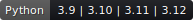
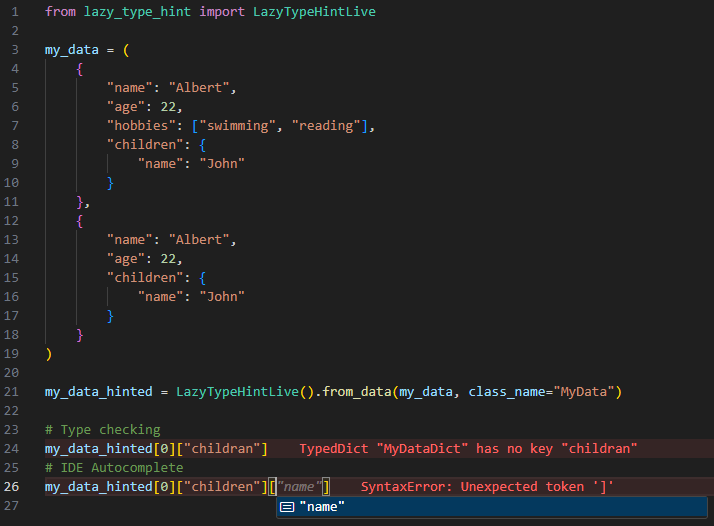

LazyTypeHint#

LazyTypeHint allows you to quickly generate accurate, ready-to-use type hints for any
Python data structure. It supports a wide range of data types, including dictionaries,
callables, Pandas DataFrames, NumPy arrays, YAML files, and more
Rationale#
Throughout my career in the robotics industry, I encountered numerous scenarios where working with complex and diverse data structures posed significant challenges. Configuration files were just one example—from handling deeply nested dictionaries to parsing dynamic API responses, the lack of proper type hints consistently made development harder. Here’s why:
- Limited IDE Assistance: Without prior knowledge of the data structure, IDE features like autocompletion and type checking are ineffective. Coding without these tools is cumbersome.
-
Manual Type Hints are Impractical:
-
Time-Consuming: Extracting type hints from complex files, such as a 10,000-line YAML file, is tedious.
- Hard to Maintain: Any structural change requires team-wide updates, risking inconsistencies and bugs.
- Comparison Challenges: Verifying that two data structures share the same structure is non-trivial.
LazyTypeHint overcomes these challenges by automating type hint generation and creating
reusable Python modules. This automation enhances IDE capabilities, allows static analysis
(i.e type checking), and improves integration with version-control tools. Consider the
following example:

Philosophy#
LazyTypeHint is built on the following principles:
- Quick: Rapidly generate type hints for complex data structures.
- User-Friendly: Minimize complexity with intuitive methods.
- Efficiency: Simplifies and enhances type hint generation by recognizing and consolidating equivalent sub-data structures, reducing redundancy.
- Customizable: Provide flexibility on the type hint generation for diverse use cases.
- Immutable: Maintain the integrity of input data.
- Minimal Dependencies: Keep the tool lightweight and easy to install.
Installation#
Install LazyTypeHint using your preferred package manager:
API#
The user can interact with the type hint generation via two main APIs:
Generate type hints that can be exported into a single file for reuse in your Python scripts. This approach is ideal when type hints need to be stored and tracked within a git repository. For more details, refer to the Standard API
from lazy_type_hint import LazyTypeHint, LazyTypeHintLive
data = ({"name": "Peter", "age": 22},) # (1)!
LazyTypeHint().from_data(data, class_name="MyData").to_file("file.py") # (2)!
- Any data structure that requires type hinting.
LazyTypeHintgenerates a Python scriptfile.py, allowing you to later export theMyDatatype alias.
Generate type hints that are temporarily cached in the hard disk, ideal for quick data exploration. For more details, refer to the Live API.
from lazy_type_hint import LazyTypeHint, LazyTypeHintLive
data = ({"name": "Peter", "age": 22},) # (1)!
data_type_hinted = LazyTypeHintLive().from_data(data, class_name="MyData") # (2)!
- Any data structure that requires type hinting.
- The output variable retains the original data while being fully type hinted